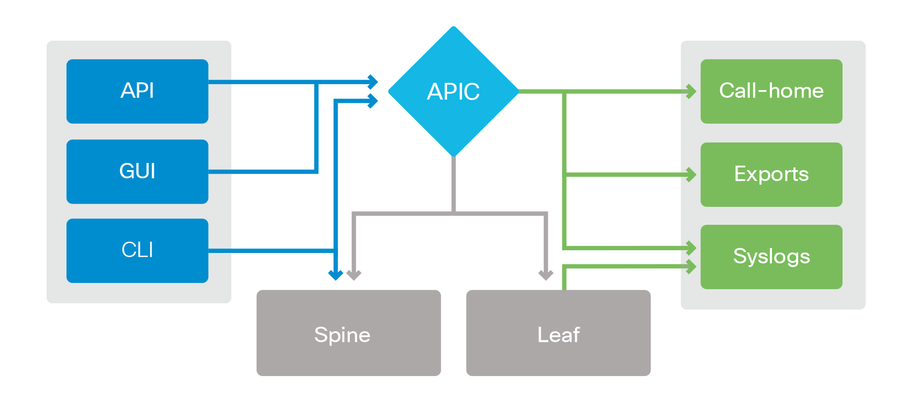

Troubleshooting Tools¶
This section is intended to provide an overview of the tools that could be used during troubleshooting efforts on an ACI fabric. This is not intended to be a complete reference list of all possible tools, but rather a high level list of the most common tools used.
{kind=link}
APIC Access Methods¶
There are multiple ways to connect to and manage the ACI fabric and object model. An administrator can use the built-in Graphical User Interface (GUI), programmatic methods using an Application Programming Interface (API), or standard Command Line Interface (CLI). While there are multiple ways to access the APIC, the APIC is still the single point of truth. All of these access methods - the GUI, CLI and REST API - are just interfaces resolving to the API, which is the abstraction of the object model managed by the DME.
GUI¶
One of the primary ways to configure, verify and monitor the ACI fabric is through the APIC GUI. The APIC GUI is a browser-based HTML5 application that provides a representation of the object model and would be the most likely default interface that people would start with. GUI access is accessible through a browser at the URL https://<APIC IP> The GUI does not expose the underlying policy object model. One of the available tools for browsing the MIT in addition to leveraging the CLI is called “visore” and is available on the APIC and nodes. Visore supports querying by class and object, as well as easily navigating the hierarchy of the tree. Visore is accessible through a browser at the URL https://<APIC IP>/visore.html
API¶
The APIC supports REST API connections via HTTP/HTTPS for processing of XML/JSON documents for rapid configuration. The API can also be used to verify the configured policy on the system. This is covered in details in the REST API chapter.
A common tool used to query the system is a web browser based APP that runs on Google Chrome (tm) web browser called “Postman”.
CLI¶
The CLI can be used in configuring the APIC. It can be used extensively in troubleshooting the system as it allows real-time visibility of the configuration, faults, and statistics of the system or alternatively as an object model browser. Typically the CLI is accessed via SSH with the appropriate administrative level credentials. The APIC CLI can be accessed as well through the CIMC KVM (Cisco Integrated Management Console Keyboard Video Mouse interface).
CLI access is also available for troubleshooting the fabric nodes either through SSH or the console.
The APIC and fabric nodes are based on a Linux kernel but there are some ACI specific commands and modes of access that will be used in this book.
CLI MODES:¶
APIC:¶
The APIC has fundamentally only one CLI access mode. The commands used in this book are assuming admininistrave level access to the APIC by use of the admin user account.
Fabric Node:¶
The switch running ACI software has several different modes that can be used to access different levels of information on the system:
- CLI - The CLI will be used to run NX-OS and Bash shell commands to check the concrete models on the switch. For example show vlan, show endpoint, etc. In some documentation this may have been referred to as Bash, iBash, or iShell.
- vsh_lc - This is the line card shell and it will be used to check line card processes and forwarding tables specific to the Application Leaf Engine (ALE) ASIC.
- Broadcom Shell - This shell is used to view information on the Broadcom ASIC. The shell will not be covered as it falls outside the scope of this book as its assumed troubleshooting at a Broadcom Shell level should be performed with assistance of Cisco Technical Assistance Center (TAC). Virtual Shell
- (VSH): Provides deprecated NX-OS CLI shell access to the switch. This mode can provide output on a switch in ACI mode that could be inaccurate. This mode is not recommended, not supported, and commands that provide useful output should be available from the normal CLI access mode.
Programmatic Configuration (Python)¶
A popular modern programming language is Python, which provides simple object-oriented semantics in interpreted easy-to-write code. The APIC can be configured through the use of Python through an available APIC Software Development Kit (SDK) or via the REST API.
Fabric Node Access Methods¶
CLI In general, most work within ACI will be done through the APIC using the access methods listed above. There are, however, times in which one must directly access the individual fabric nodes (switches). Fabric nodes can be accessed via SSH using the fabric administrative level credentials. The CLI is not used for configuration but is used extensively for troubleshooting purposes. The fabric nodes have a Linux shell along with a CLI interpreter to run show level commands. The CLI can be accessed through the console port as well.
Faults The APICs automatically detect issues on the system and records these as faults. Faults are displayed in the GUI until the underlying issue is cleared. After faults are cleared, they are retained until they are acknowledged or until the retaining timer has expired. The fault is composed of system parameters, which are used to indicate the reason for the failure, and where the fault is located. Fault messages link to help to understand possible actions in some cases.
Exporting information from the Fabric¶
Techsupport The Techsupport files in ACI capture application logs, system and services logs, version information, faults, event and audit logs, debug counters and other command output, then bundle all of that into one file on the system. This is presented in a single compressed file (tarball) that can be exported to an external location for off-system processing. Techsupport is similar to functionality available on other Cisco products that allow for a simple collection of copious amounts of relevant data from the system. This collection can be initiated through the GUI or through the CLI using the command techsupport.
Core Files A process crash on the ACI fabric will generate a core file, which can be used to determine the reason for why the process crashed. This information can be exported from the APIC for decoding by Cisco support and engineering teams.
External Data Collection – Syslog, SNMP, Call-Home¶
There are a variety of external collectors that can be configured to collect a variety of system data. The call-home feature can be configured to relay information via emails through an SMTP server, for a network engineer or to Cisco Smart Call Home to generate a case with the TAC.
Health Scores¶
The APIC manages and automates the underlying forwarding components and Layer 4 to Layer 7 service devices. Using visibility into both the virtual and physical infrastructure, as well as the knowledge of the application end-to-end based on the application profile, the APIC can calculate an application health score. This health score represents the network health of the application across virtual and physical resources, including Layer 4 to Layer 7 devices. The score includes failures, packet drops, and other indicators of system health.
The health score provides enhanced visibility on both application and tenant levels. The health score can drive further value by being used to trigger automated events at specific thresholds. This ability allows the network to respond automatically to application health by making changes before users are impacted.
Atomic Counters¶
Atomic counters can be configured to monitor endpoint/EPG to endpoint/EPG traffic within a tenant for identifying and isolating traffic loss. Once configured, the packet counters on a configured policy are updated every 30 seconds. Atomic counters are valid when endpoints reside on different leaf nodes.